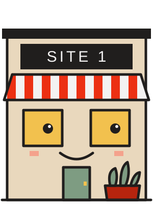

THE OPERATOR’S TOOLKIT · WEDNESDAY 4
Who is this site actually for?
Profile one site in a week: who’s outside, when, and what they’d spend if you served them.



COMMUTERS
LOCALS
SWIPE FOR THE PROFILE1 / 8
STEP 1
Find the peak
Till report: guests by day and by hour, for the last eight weeks. The two or three busiest hours are the peak.
EXAMPLESITE 1SITE 10
StreetBy a stationResidential
PeakWeekdays, 7 to 9amWeekend late mornings
Count guests or orders, not sales. One big catering order can fake a peak.
THE OPERATOR’S TOOLKIT2 / 8
STEP 2
Watch 20 guests at the peak
Stand where you can see the door. For each guest: who they are, and whether they’re in a hurry or staying.
AT THE PEAKSITE 1SITE 10
WhoCommutersLocals
Hurry or stayIn a hurry, to goThey stay
Spend a head£6£7
Watch, don’t ask. Write what you see, not who you hoped to serve.
THE OPERATOR’S TOOLKIT3 / 8
STEP 3
Check the offer fits the guest
What does the site sell at its peak? Is it built for the guests you just watched?
SITE 10 ON A SATURDAY
Guests who stay200
SoldSITE 1’s menu
A coffee and a pastry, to go£7
Guests who stay, served a menu built for guests in a hurry. That’s a mismatch, and it’s where the money is.
THE OPERATOR’S TOOLKIT4 / 8
STEP 4
Price what they’d spend
From your own menu, price an offer built for them. Then multiply by the guests at the peak.
SITE 10: 200 SATURDAY GUESTS
Now: 200 × £7£1,400
With a brunch: 200 × £11£2,200
Upside a week+£800
£13,000 + £800 = £13,800 a week: past SITE 10’s £13,520 break-even.
The £11 is a test, not a forecast. Run it for four weeks before you count the money.
THE OPERATOR’S TOOLKIT5 / 8
STEP 5
Write the site’s line
“SITE 10 is for locals on Saturday late mornings, who stay.”
Then set three things at that site for that line:
MENUHOURSROTA
Same brand, same name above the door. Each site set for the guests on its own street.
If you can’t fill the line in, you haven’t watched the peak yet.
THE OPERATOR’S TOOLKIT6 / 8
YOUR SITE
Fill it in
AThe peakbusiest days and hours
BWho’s therefrom watching 20 guests
CIn a hurry or staying?
DGuests at the peak, a week
ESpend a head now£
FSpend a head to testan offer built for B£
GUpside a weekD × (F − E)£
This site is for ____________ on ____________, ____________.
SAVE THIS PAGE7 / 8
RUNNING MORE THAN ONE SITE?
Comment SITE for the multi-site version.
Every site’s profile side by side: who it’s for, whether the offer fits, the upside, and the line for each manager.
Watch Monday’s episode of The Operator’s Ledger, “Segment, target, position”, on the WRW Hospitality page.
WRW HOSPITALITY
Wesley Williams
Illustrative figures. Free for use in your own business; not to be resold, rebranded or redistributed.
© 2026 WRW HOSPITALITY8 / 8